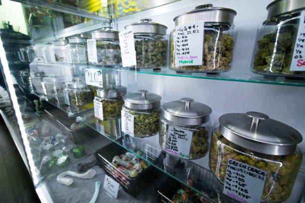
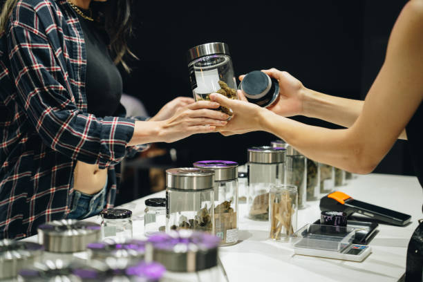
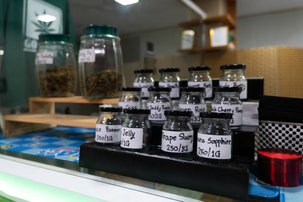

News
Medical Cannabis Legalization Mississippi
Medical Cannabis Dispensary Regulations
Patient Access to Medical Cannabis
About Us
Mississippi CBD
What is a Mississippi medical cannabis dispensary?
May 24, 2024
A Mississippi medical cannabis dispensary is a specialized facility that provides patients with access to medical marijuana products.. These dispensaries are regulated by the state and must adhere to strict guidelines in order to operate legally.
Medical cannabis dispensaries offer a variety of products, including dried flower, edibles, tinctures, and more.
What services are offered at a Mississippi medical cannabis dispensary?
May 24, 2024
A Mississippi medical cannabis dispensary offers a variety of services to cater to the needs of patients seeking relief through medical marijuana.. These dispensaries provide access to a range of high-quality cannabis products, including flower, edibles, tinctures, topicals, and concentrates.
One of the primary services offered at a Mississippi medical cannabis dispensary is patient consultation.
What are the requirements to open a medical cannabis dispensary in Mississippi?
May 24, 2024
Opening a medical cannabis dispensary in Mississippi requires careful consideration and adherence to specific requirements set forth by the state.. As of now, Mississippi has legalized medical marijuana for certain qualifying conditions, but the process of opening a dispensary is still quite stringent.
First and foremost, individuals or entities looking to open a medical cannabis dispensary in Mississippi must obtain a license from the State Department of Health.
What products can be found at a Mississippi medical cannabis dispensary?
May 24, 2024
Medical cannabis dispensaries in Mississippi offer a variety of products to meet the needs of patients seeking relief from various health conditions.. These dispensaries provide access to medical cannabis products that have been approved by state regulations and are specifically designed to help manage symptoms and improve quality of life.
Some of the products that can be found at a Mississippi medical cannabis dispensary include:
- Flower: Also known as bud or marijuana, flower is the dried and cured form of the cannabis plant.
What regulations govern the operations of a medical cannabis dispensary in Mississippi?
May 24, 2024
Medical cannabis dispensaries in Mississippi are subject to a strict set of regulations that govern their operations.. These regulations are designed to ensure that the dispensary operates in a safe and responsible manner, while also protecting patients who rely on medical cannabis for their treatment.
One of the key regulations that govern the operation of a medical cannabis dispensary in Mississippi is the requirement for all staff members to undergo extensive training on the proper handling and distribution of medical cannabis.
How to access the best medical cannabis products in Mississippi
May 24, 2024
Medical cannabis products have been gaining popularity in Mississippi as more and more people are turning to this natural alternative for managing their health conditions.. However, finding the best medical cannabis products can be a daunting task for many.

Discover the secrets of effective pain management with our medical cannabis dispensary
May 24, 2024
Are you tired of living in constant pain?. Have you tried countless medications and treatments with little to no relief?
Curious about alternative medicine? Learn how our dispensary can help
May 24, 2024
Are you intrigued by the world of alternative medicine?. Do you want to explore natural remedies and holistic approaches to health and wellness?
Looking for a natural way to relieve stress and anxiety? Visit our medical cannabis dispensary
May 24, 2024
Are you feeling overwhelmed with stress and anxiety?. Are you tired of turning to prescription medications that come with a laundry list of side effects?

Unsure where to start with medical cannabis? Let us guide you at our Mississippi dispensary
May 24, 2024
Are you feeling overwhelmed and unsure about where to start with medical cannabis?. Don't worry, we're here to help guide you every step of the way at our Mississippi dispensary.
Navigating the world of medical cannabis can be daunting, especially if you're new to using it as a form of treatment.

The benefits of medical cannabis for patients in Mississippi
May 24, 2024
Medical cannabis has been a hot topic of debate in Mississippi and across the country for years.. With more and more states legalizing its use for medical purposes, it is important to consider the benefits that this natural remedy can provide to patients in need.
One of the main benefits of medical cannabis is its ability to alleviate symptoms of various medical conditions.
The regulations and licensing requirements for opening a medical cannabis dispensary in Mississippi
May 24, 2024
Opening a medical cannabis dispensary in Mississippi can be a complex and challenging process due to the regulations and licensing requirements set forth by the state government.. In recent years, there has been a growing interest in the use of medical cannabis as a treatment option for various health conditions, leading to an increase in the number of dispensaries seeking to open their doors.
One of the key aspects to consider when opening a medical cannabis dispensary in Mississippi is obtaining the necessary licenses and permits.
The impact of medical cannabis on the economy and job creation in Mississippi
May 24, 2024
Medical cannabis has been a hot topic of debate in Mississippi, with proponents arguing that it can have a positive impact on the economy and job creation.. The legalization of medical cannabis could potentially open up a new industry in the state, creating jobs and generating revenue for the government.
One of the main ways in which medical cannabis could benefit the economy is through job creation.
The challenges faced by patients accessing medical cannabis in Mississippi
May 24, 2024
Accessing medical cannabis in Mississippi can be a daunting task for patients who are in need of this alternative form of treatment.. Despite the legalization of medical cannabis in the state, there are still numerous challenges that patients face when trying to obtain their medication.
One major obstacle is the limited number of dispensaries that are allowed to operate in Mississippi.
The future outlook for the medical cannabis industry in Mississippi
May 24, 2024
The future outlook for the medical cannabis industry in Mississippi is looking promising.. With recent legislative changes and growing public acceptance of cannabis as a legitimate form of medicine, the industry is poised for significant growth in the coming years.
One of the key factors driving this growth is the increasing recognition of the therapeutic benefits of cannabis for a wide range of medical conditions.